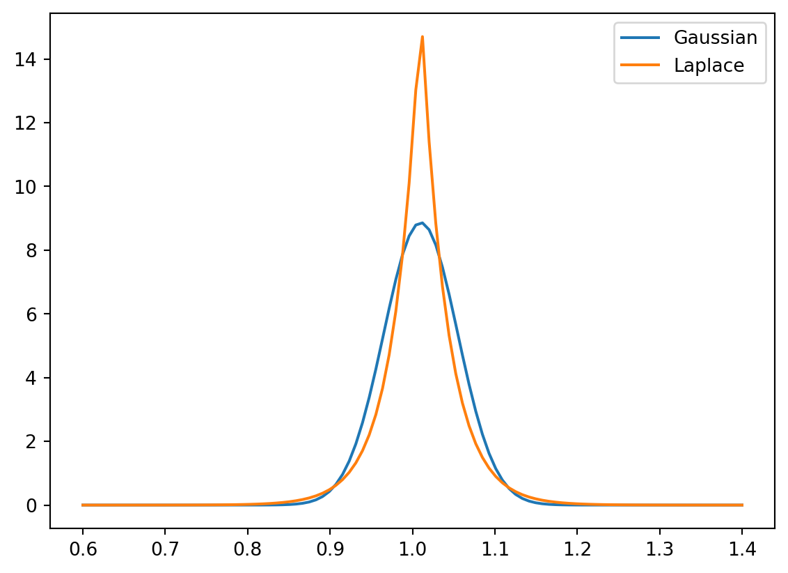
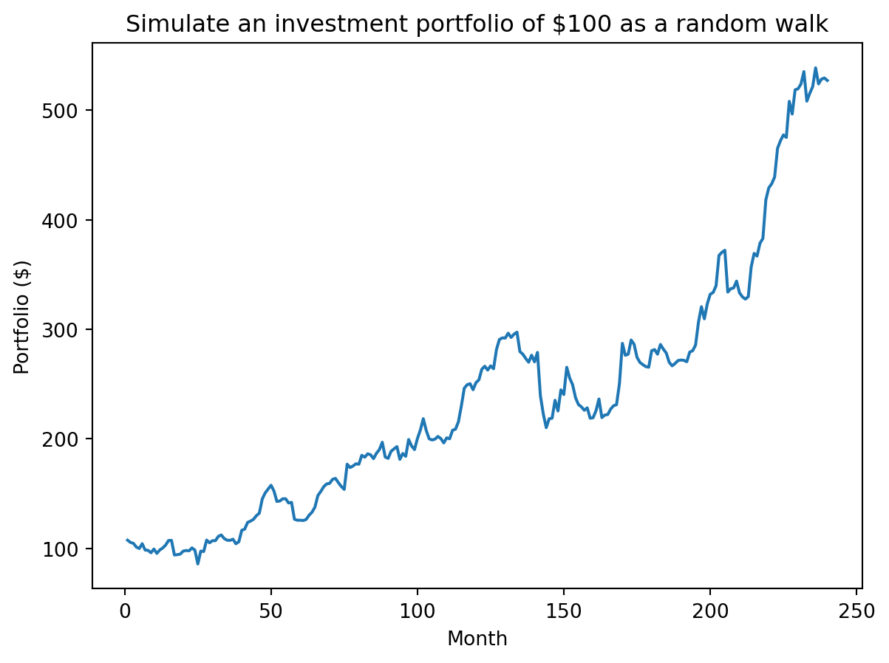
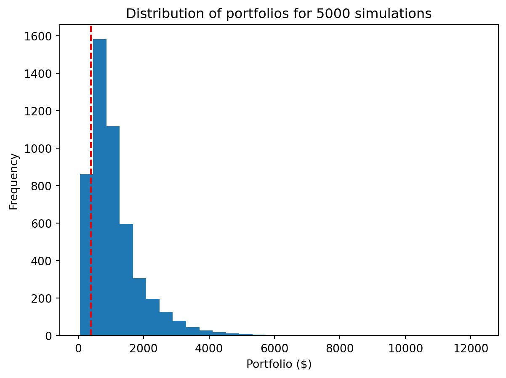
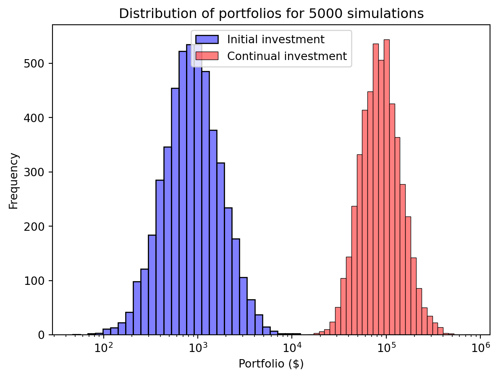

# This is the typical import style/prefix. It makes all the NumPy types and functions
# available with a `np` prefix.
import numpy as np
print("NumPy version:", np.__version__)NumPy version: 2.2.3Getting started with IPython and NumPy vectorized execution
Open the live notebook in Google Colab or download the live notebook.
These notes were written for students with introductory Computer Science experience in Python or introductory data science experience using R. The former may not familiar with common data science tools like notebooks, data frames, etc., while the latter may not be familiar with Python. Our goal in this class is to build a common foundation using data science tools in Python.
If you are coming from R, keep an eye out for special callouts identifying the equivalent techniques in R. We hope you fill find that this transition is not as hard as you might expect. In fact, we think you’ll find that the Python data science ecosystem is very familiar. That’s not an accident. Python data science tools share inspiration with their R counterparts (or are even directly modeled on tools available within R). In some respects, it may be more challenging to transition from using Python as a general purpose language to using the Python data science ecosystem the way we will in this class.
Some helpful resources for (re)learning Python, especially in the contexts of data science:
Why Python (and not R, or some other tool)? That is a complicated and fraught question. But the short answer is machine learning. Python is the lingua franca of machine learning, and that is our ultimate focus.
The primary computing environment for our class will be a Jupyter/IPython notebooks. These are very similar to R Markdown or other notebook-style computing environments you might have used in other settings. Compared to writing a stand-alone program or scripts, notebooks are designed to be interactive computational documents that combine code, visualizations and narrative text.
A quick orientation:
%run, which extend Python’s capabilities.A common issue is that your kernel environment, the current state of your Python session, can be out of sync with the current code in your notebook. Keep in mind, the kernel is an interactive environment that has accumulated all of the computations you have performed so far. That may or may not be the same as the environment created if you ran your notebook from top-to-bottom in a fresh session. To avoid problems, get in the habit of restarting your kernel to get a fresh session and running your notebook from top-to-bottom to ensure it is still a valid and coherent program. Especially make sure you do so before submitting any work.
While you can run notebooks locally (and we’re happy to show you how to do so) the primary computing environment we will use in class is Google Colab. Colab is cloud-based compute environment that provides the libraries and computing resources “out of the box” (for free!) and enables rich forms of collaboration.
There is a rich data science ecosystem in Python. Some of the libraries we will be using include:
ggplot2 in R).The numpy (Numerical Python) package is an extensive set of tools for working with N-dimensional arrays in Python. numpy, which we will write as NumPy, is at the heart of efficient data science and scientific computation in Python and is common building block for many of the other tools we will use.
Similar to R and other data intensive computing environment, NumPy encourages us to think about our computations in terms of “vector” or “array” operations, i.e., performing computations across multiple values instead of using loops. This “vectorized” style of computation and can be much faster (and more concise) than directly iterating (with for loops, etc.) because we can leverage NumPy’s highly optimized native implementations (i.e., implemented in C, not Python). Many operations in R, Matlab, etc. are similarly wrappers around high-performance native libraries. In this context, we use “vector” in the linear algebra sense of the term, i.e. a 1-D matrix of values, instead of a description of magnitude and direction (like you might see in Physics). More generally, we are aiming for largely “loop-free” implementations, that is all loops are implicit in the vector operations and thus implemented in native code.
Let’s get started by importing the relevant package. Here we import all the types and functions in the numpy package with a np prefix, i.e., make them available to our program as np.<something>. Another common format is import numpy, which is shorthand for import numpy as numpy. We typically want to use the prefixed imports to avoid naming conflicts, i.e., identically named functions from different packages colliding. Many of the packages we will use in class have conventions for import naming (like np for numpy) that we will try to follow.
# This is the typical import style/prefix. It makes all the NumPy types and functions
# available with a `np` prefix.
import numpy as np
print("NumPy version:", np.__version__)NumPy version: 2.2.3Even if you have never used NumPy, vectorized computations are likely not new. For example, a first implementation of mean in Python might look like:
def is used to define a function, here named mean with one positional argument data. The body of function is indented (typically 4 spaces, but any indentation is allowed as long as it is consistent).
for loop defines a loop variable (here val) that is assigned values from from a loop sequence. Here data is likely a list, but any ordered sequence will work. In each iteration the loop variable is assigned to the next value from the sequence.
return statement (unlike R which implicitly returns the value of the last expression in a function), which terminates execution and “returns” a value to the caller. Functions without a return statement are permitted and will implicitly return a special value None.
A more typical implementation might be:
def mean(data):
return sum(data) / len(data)Here the loop inherent to the sum operation is implicit within the sum function, i.e., we would describe it as “vectorized”.
In a more complex example, let’s consider a standard deviation computation. Here is a typical implementation with an explicit loop. How can we vectorize this function?
import math
def stddev(data):
mean = sum(data) / len(data)
result = 0.0
for d in data:
result += (d - mean) ** 2 # ** is the power operator
return math.sqrt(result / (len(data) - 1))Here is the corresponding implementation using NumPy. Notice there are no more for loops!
data = np.array([1.0, 2.0, 3.0, 4.0]) # Square brackets create a list literal
np.sqrt(np.sum((data - np.mean(data))**2)/(len(data) - 1))np.float64(1.2909944487358056)For our example input, this code performs the following operations:
Creates a 1-D array from a list.
Performs a “reduction”, computing the mean, to produce the scalar 2.5.
Performs an element-wise subtraction to compute the difference from the mean. Note that the scalar argument, the mean, is “broadcasted” to be the same size as the vector.
\[ \begin{bmatrix} 1.0 \\ 2.0 \\ 3.0 \\ 4.0 \end{bmatrix} - \begin{bmatrix} 2.5 \\ 2.5 \\ 2.5 \\ 2.5 \end{bmatrix} \]
Performs an element-wise “squaring” via the ** operator.
\[ \begin{bmatrix} -1.5^2 \\ -0.5^2 \\ 0.5^2 \\ 1.5^2 \end{bmatrix} \]
Performs a sum reduction of the intermediate vector, producing the scalar 5.
\[ 2.25 + 0.25 + 0.25 + 2.25 \]
Performs the division and square root operations over scalar values.
\[ \sqrt{\frac{5}{4-1}} \]
Let’s summarize the NumPy features we used here:
np.array([1.0,2.0,3.0])) or generated directory by NumPy functions. ndarrays compactly (e.g. contiguously) store data of a uniform type using native representations (e.g., double 64-bit floating point) and supports vectorized operations.
data - np.mean(data), (data - mean) ** 2) applied to whole arrays without explicit Python for loops.
np.mean and np.sum that compute scalars from arrays efficiently.
np.sqrt, arithmetic operators) that operate on arrays efficiently.
The above implementation is more concise, but also much faster!
def stddev_numpy(data):
return np.sqrt(np.sum((data - np.mean(data))**2)/(len(data) - 1))# Create random input data sampled from a normal distribution
data = np.random.normal(size=1000)
data_list = list(data)
# Use the %timeit magic command to benchmark this code by running it several times
%timeit stddev_numpy(data)
%timeit stddev(data_list)3.75 μs ± 35.5 ns per loop (mean ± std. dev. of 7 runs, 100,000 loops each)
78.9 μs ± 1.43 μs per loop (mean ± std. dev. of 7 runs, 10,000 loops each)Notice how much faster the NumPy version is! Why is that? Both implementations are performing the same arithmetic operations. The difference is that NumPy is doing so with highly optimized native libraries that are working with the machine’s underlying data representation, i.e., directly with the underlying double precision floating point values, compactly stored in continuous memory. In contrast, the Python implementation is working with Python’s highly flexible data types and loop structures. For examples, Python lists store references to the values contiguously, but not the values themselves. As a result more and less performant memory accesses are required. Further, numerous operations are required to access the underlying floating point value to actually perform the calculation.
If you will operate on large regularly-structured data with uniform type and are considering writing for loops or Python lists, etc., ask yourself whether you can achieve your goal with NumPy arrays instead. Often the vectorized code is more concise and faster, especially as the dimensionality increases (i.e., your data is a 2 or 3 or more dimensional array). But, “always” is a strong word. What we will see is that “general purpose” Python is often used as the orchestrator, i.e., to setup the computation. But the “heavy lifting”, the computationally intensive portions, are performed with NumPy. And when we do work with NumPy we want to minimize the use of for loops and maximize the use of vectorized operations.
A random walk is a path composed of a succession of random steps, e.g. that path of molecule as it travels in a liquid of gas. Another application of that tool is simulating the stock market (inspiration). A common rule of thumb is that the stock market as a whole will yield 7% a year, but that simplistic model doesn’t capture the variability in returns observed in practice. For example, the S&P 500, a large-cap stock index increased 27% in 2021, but dropped 19.4% in 2022.
An alternate model (Malkiel 2015) (although perhaps not any more accurate) is that that stock market increases 1% per month on average, but with a 4.5 percentage point standard deviation, i.e., on average the market goes up, but there is high variance in those returns. Let’s leverage our new numerical computing tools to efficiently simulate the stock market.
Let’s assume we start with a portfolio of $100 and simulate 20 years, e.g., 240 months. Each month we observe a random return with a mean of 1% and standard deviation of 4.5% (the random walk). The compounded product of those returns gives our final portfolio amount. The random steps in our walk are samples from a distribution of possible returns (with a mean of 1% and standard deviation of 4.5%). When we sample from a distribution, we are generating random values with a probability that matches the target distribution. In our case, most samples will be around 1%, with some outliers as described by the standard deviation.
One immediate question is what distribution to use. The probability density function for a Gaussian and Laplace distribution with means of 1.01 (the multiplier for a yield of 1%) and a standard deviation of 4.5% shown below. The details are not so relevant for this portion of the course, but the Laplace distribution offers a better model of the “fat” tails (increased likelihood of outlier events) and asymmetry observed in the stock market. We can use the numpy.random.laplace function to generate random samples from a Laplace distribution. That function is parameterized by the mean and scale (the latter is derived from the standard deviation).
import math
from scipy.stats import norm, laplace
from matplotlib import pyplot as plt
x = np.linspace(0.6, 1.4, 100)
plt.plot(x, norm.pdf(x, 1.01, 0.045), label="Gaussian")
plt.plot(x, laplace.pdf(x, 1.01, 0.045 / math.sqrt(2)), label="Laplace")
plt.legend()
plt.show()
We are interested in the cumulative product of the monthly returns, which we can compute with the cumprod function, which as its name suggests computes \(x_1, x_1\cdot x_2, x_1\cdot x_2 \cdot x_3,...\). We will start with a single simulation:
import math # To use the sqrt function
# Initial portfolio
initial = 100
# Model parameters
mean = 0.01
std = 0.045
scale = std / math.sqrt(2) # Scale parameter for Laplace distribution
# Compute cumulative returns by month
steps = np.random.laplace(1+mean, scale, 240)
returns = np.cumprod(steps)
portfolio = initial * returnsplt.plot(range(1, len(portfolio)+1), portfolio)
plt.xlabel("Month")
plt.ylabel("Portfolio ($)")
plt.title(f"Simulate an investment portfolio of ${initial} as a random walk")
plt.show()
The above just performed a single simulation. We typically want to perform the walk many times, e.g., 5000, to get a distribution of outcomes. Here is where the vectorized approach can be particularly helpful (for both conciseness and performance). We can think of 5000 random walks of length 240 as working with a 2-D array with 5000 rows and 240 columns where each row is a different walk and each column is a month (a step in our walk). To simplify our approach we will just focus on the total yield, i.e., compute the product of the returns (with np.prod) not the cumulative product.
num_sim = 5000
# Providing a tuple for size to laplace produces num_simx240 values. We then compute
# the product along axis=1, i.e., along the rows, to get the final return.
steps = np.random.laplace(1+mean, scale, (num_sim, 240))
returns = np.prod(steps, axis=1)
portfolios = initial * returnsWe observe a broad distribution of returns including a subset of simulations that underperformed the simplistic model of 7% return per year (shown with the dashed line).
plt.hist(portfolios, bins=30)
plt.axvline(x=initial * (1.07 ** 20), color='r', linestyle='--')
plt.xlabel("Portfolio ($)")
plt.ylabel("Frequency")
plt.title("Distribution of portfolios for " + str(num_sim) + " simulations")
plt.show()
What is different about this version? Notice that we provide a length 2 tuple to np.random.laplace. This creates a 2-D array of size 5000×240. We can access the size tuple of a NumPy array with the shape attribute. The dimensions correspond to the indices in shape, i.e., dimension 0 is 5000, dimension 1 is 240 and so on.
steps.shape(5000, 240)We also added an axis argument to the np.prod reduction. By default, reductions like prod are performed “across” the entire entire array “flattened” into a 1-D vector. If we only want to reduce across a specific dimension, e.g., just the columns, we specify that with the axis argument. The axes are numbered according to the shape, i.e., index 0 of the shape is axis 0, index 1 is axis 1, … If the shape is 5000×240, summing across axis 1 sums across the 240 dimension.
axis is an example of a Python optional keyword argument. We don’t need to provide a value for that argument, and when we do, we do so by name instead of positionWe assumed an initial investment of $100 with no further investments. However a more realistic scenario might be to simulate regular contributions, e.g., contributing a fixed amount each month. How would you extend our previous approach to to model regular contributions?
Let’s start with the underlying expression for a single simulation, shown below where \(r_i\) is the rate of return for month \(i\).
\[ \begin{align} P_{240} &= \sum_{m=1}^{240} \$100 \prod_{i=m}^{240} r_i \end{align} \]
Our first instinct might be to convert the product (\(\prod\)) and sum (\(\sum\)) operations into for loops, as they are iterative computations over our 240 month time period. As we saw already, we can implement the product operation as a vectorized operation across a 2-D array. Could we do so with the sum as well?
Consider the following refactoring of \(P_{240}\):
\[ \begin{align*} P_{240} &= \sum_{m=1}^{240} \$100 \prod_{i=m}^{240} r_i \\ &= \$100 \sum_{m=1}^{240} \prod_{i=m}^{240} r_i \\ &= \$100 (\prod_{i=1}^{240} r_i + \prod_{i=2}^{240} r_i + ... + r_{240}) \\ &= \$100 (r_{240} + (r_{240}\cdot r_{239}) + ... \prod_{i=1}^{240} r_i) \\ &= \$100 (r_1 + (r_1\cdot r_2) + ... \prod_{i=1}^{240} r_i) \end{align*} \]
The sequence \(r_1, (r_1\cdot r_2), ..., \prod_{i=1}^{240} r_i\) is the cumulative product! That is the right hand side of the last expression is the sum of the cumulative product of the monthly returns! The corresponding vectorized implementation would be:
# We do exactly the same initial steps as before, but now we think of the returns
# as the total return for each month's investment (albeit in reverse). The first
# column is the return on the the amount that has been invested for 1 month, the
# second column is the return on the amount invested for 2 months, all the way to
# the initial amount invested for 240 months.
returns = np.cumprod(np.random.laplace(1+mean, scale, (num_sim, 240)), axis=1)
# `portfolios_monthly` captures the final portfolio value with the iterative investment for all simulations
portfolios_monthly = initial * np.sum(returns, axis=1)We can then plot the distribution of our portfolios with continual investment. That continual investment makes a big difference!
import seaborn as sns
sns.histplot(portfolios, bins=30, log_scale=True, alpha=0.5, label="Initial investment", color="blue")
sns.histplot(portfolios_monthly, bins=30, log_scale=True, alpha=0.5, label="Continual investment", color="red")
plt.xlabel("Portfolio ($)")
plt.ylabel("Frequency")
plt.title("Distribution of portfolios for " + str(num_sim) + " simulations")
plt.legend()
plt.show()
This “vectorized” approach is very powerful. And not as unfamiliar as it might seem. If you have ever created a formula in Excel in a single cell and then copied it to an entire column, then you have performed a “vectorized” computation. As we described earlier, the benefits of this approach are performance and programmer efficiency. We just implemented some very sophisticated computations very concisely and efficiency.
One challenge is the size of these libraries. NumPy and the other libraries we will use have 1000s of functions. We can’t possible know every feature that might be available. Instead we will seek to build our understanding of how to best approach data science problems to effectively use these tools (something not necessarily specific to Python), and the sense of what kind of functions should exist (and where/how to start looking for them). In the readings, in class and in these notes, aim to identify those “cross-cutting” approaches (or patterns) that you can apply broadly. With an appropriate approach in mind you can then use the documentation, online search, GenAI, etc. to efficiently find the specific functions/syntax you need.
© Michael Linderman and Phil Chodrow, 2025-2026